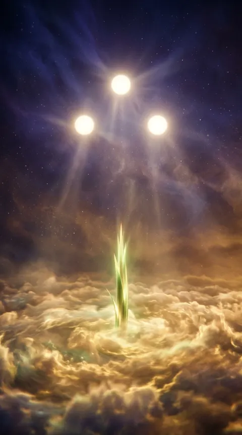

宇摩志阿斯訶備比古遅神古事記の神々 其の四
古事記で4番目に登場する神さま「宇摩志阿斯訶備比古遅神（うましあしかびひこぢのかみ）」。
古事記と、名前の意味
- 大地がまだ水に浮く脂のように、くらげのように漂っていたころ、葦の芽のように萌え上がるものから生まれました。
- 名前は「りっぱな葦の芽の男神」という意味。人が葦から生まれる神話の名残とする説もあり、ポリネシアなど南の島々の神話との似かたが注目されています。
- 出雲大社の御本殿の中、「御客座」に、別天神五柱の一柱として祀られています。
よくある疑問
名前の意味は？
「りっぱな葦の芽の男神」という意味です。大地がくらげのように漂っていたころ、葦の芽のように萌え上がるものから生まれました。
外国の神話と似ている？
人が葦から生まれる神話の名残とする説があり、ポリネシアなど南の島々の神話との似かたが注目されています。

イメージ画
1分で見る
出典と画像
参考：國學院大學「古事記ビューアー」、出雲大社 公式サイト
出雲大社御本殿の写真：Wikimedia Commons（Saigen Jiro, CC0）。そのほかの画像はイメージです。
動画のナレーション：VOICEVOX:青山龍星